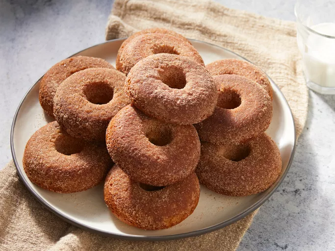

Donuts
Document

Description:
Donuts are deep-fried pastries that are popular as a sweet treat or snack. They come in various shapes and sizes and can be filled, glazed, or topped with different ingredients
Ingredients:
- 1/4 teaspoons (1 packet) active dry yeast
- 1/4 cup warm water (110°F)
- 3/4 cup warm milk (110°F)
- 1/4 cup granulated sugar
- 1/2 teaspoon salt
- 1 teaspoon vanilla extract
- 1 egg
- 3 1/2 cups all-purpose flour
- 1/4 cup unsalted butter, softened
- Oil for frying
Steps:
Activate the yeast:
- In a small bowl, dissolve the yeast in warm water and let it sit for about 5 minutes until foamy.
Prepare the dough:
- In a large mixing bowl, combine the warm milk, sugar, salt, vanilla extract, egg, and half of the flour.
- add the yeast mixture and mix well.
- Add the softened butter and gradually mix in the remaining flour until a soft dough forms.
Knead the dough:
- Turn the dough out onto a floured surface and knead for about 5-7 minutes until smooth and elastic.
- Place the dough in a greased bowl, cover with a clean towel, and let it rise in a warm place for about 1-2 hours until doubled in size.
Shape the donuts:
- Punch down the risen dough and roll it out on a floured surface to about 1/2 inch thickness.
- Use a donut cutter or a round cutter to cut out donut shapes.
- Place the cut-out donuts on a floured baking sheet, cover with a towel, and let them rise for another 30-45 minutes.
Fry the donuts:
- Heat oil in a deep fryer or a heavy-bottomed pot to 350°F (175°C).
- Carefully add the donuts to the hot oil, frying a few at a time.
- Fry each side for 1-2 minutes until golden brown.
- Remove the donuts with a slotted spoon and place them on a paper towel-lined tray to drain.
Glaze or decorate:
- While the donuts are still warm, you can dip them in glaze, sprinkle them with sugar, or coat them with chocolate or other toppings of your choice.
Serve and enjoy:
- Donuts are best enjoyed fresh and warm. Serve and enjoy your homemade donuts with a cup of coffee or your favorite beverage.